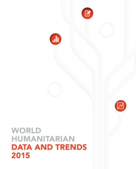

Today’s challenges, tomorrow’s solutions: improving humanitarian effectiveness
Q: What are the top three things that need to change to make humanitarian response more effective?
Three of the top-line recommendations emerging from the Leaving No One Behind report call on international humanitarian actors in particular to rethink their contribution.
The first recommendation is the need to reinforce and not replace national and local systems. Any external actor should be engaging with the primary aim of temporarily filling gaps with relevant assistance, and then very quickly considering how to invest in the longer term in enhancing local delivery capacity. Many people will assume this is only possible in natural disaster responses or in situations where crisis-affected Governments already play a leading role. But even in conflict settings and the most austere environments, the study found that local civil-society partners and local businesses often have the access and sustained commitment to effectively reach remote and vulnerable communities.
When the researcher of the report visited remote parts of eastern Democratic Republic of the Congo, people displaced by conflict reported that most of the assistance they receive comes from host communities, faith-based groups and other communal networks. In Nepal, following the 2015 earthquake, people in remote villages reported to IRIN that the only aid they had received was from a local network of volunteers. In high-intensity contexts, studies have found that more than half of all delivery is done by local actors, with remote support from UN and international partners. We know that people closest to crises can be the best responders when given the right resources, data, tools and systems to ensure predictability and principled needs-driven action.
The second recommendation is the idea of “entering with an exit”, which simply means that we must recognize that most crises today last for many years–even for generations. Once international actors engage, they should be thinking very deliberately about how to create the conditions to responsibly exit. This will include a consistent investment in reducing the frequency and impact of high-risk crises, as well as reducing overall vulnerability. For example, humanitarian actors can work much more closely with development partners in areas at high risk of natural disasters to take targeted steps towards preparedness. Similarly, where people are vulnerable to economic shocks, we can push for greater investment in national social-safety-net programmes. Humanitarians cannot deliver all of these things ourselves, but we can play a greater role in advocating sustainable solutions. For example, Jordan and Lebanon have been hosting millions of refugees from Syria since the crisis started in 2011. When the report’s researchers visited those areas in 2014, many people asked why humanitarians were still using short-term solutions, like water trucking, instead of building sustainable water infrastructure that would benefit refugees as well as host communities over the long term.
And finally, the report highlights the importance of being more connected to those outside of the traditional humanitarian circles who are, or could be, core contributors to humanitarian results. This is also referred to as a more “interoperable” approach or “leveraging comparative advantage”. Given the scale of humanitarian need today, expanding the pool of engagement is essential. That means finding common ground with business, military, diaspora communities and others to understand what each of us can uniquely deliver for people in crisis. It also implies a level of humility on the part of international humanitarian actors to better understand existing capacities and assets outside of our system, and to understand where we truly add the most value.
Q: What are the most striking trends you have identified during 2015?
The biggest trend was the intractability of conflict and the devastation armed violence is causing worldwide. In 2014 (the most recent estimates we have), a record 60 million people were displaced by conflict or violence: that is the equivalent of the population of Italy. The number of high-intensity conflicts has increased year on year to reach a record 46 high-intensity conflicts worldwide. No other regions in the world are suffering more than the Middle East and the Maghreb, where 13 high-intensity conflicts are taking place and where in just five years, the number of internally displaced people (IDPs) has more than doubled to 15.6 million in 2014.
Humanitarian actors are trying to help more people than ever before, but there is a price tag attached to that. While donors have been generous, we are now faced with the biggest funding gap on record. By the end of 2015, only 53 per cent of funding requirements were met, which translates to a US$10 billion shortfall in requirement. The funding gaps mean that the people who need our help the most are most probably not receiving assistance.
However, in 2015, there were also some positive trends. Among other things, we saw the contribution of a new breed of actors: digital humanitarians. For example, during the Ebola response, over 100 organizations came together as a digital community to map out existing health-care facilities in Liberia, Guinea and Sierra Leone, so that on-the-ground responders would know where existing health-care facilities were and what they were equipped to provide.
Q: You have identified the trends that have impacted humanitarian response the most. Which ones do you think we can expect to see in 2016?
We will see the continuation of protracted conflict. The number of political conflicts has steadily increased since 2006 by an average of 18 conflicts per year. This trend is not expected to decrease in the near term.
We’re also going to see an increased push to reach out to new partners and donors to cover the funding gap. And this will not just be a matter of securing more money, but also of establishing new mechanisms to work together and share best practice. Tools like risk insurance or loan guarantees, which development actors are increasingly tapping into, could be applied in vulnerability settings. And humanitarians will also look into tapping other sources of money, like remittances and Islamic social finance.
Q: How can institutions overcome barriers to improve interoperability?
One of the main barriers for some humanitarian actors is the concern that working with actors who are not centrally motivated by the humanitarian imperative–such as business or the military–will water down the humanitarian principles. Nothing in the research we have done on interoperability suggests that the humanitarian principles are up for debate–on the contrary, it notes them as fundamental enablers of effectiveness. But there are many areas of our work, such as logistics, risk assessment, financial services for the poor or cash-delivery systems, where delivery will be enhanced by recognizing and supporting a diverse set of actors. It may require new guidelines or standards of operation that determine when an act should be strictly humanitarian. The basic test should be: will effectiveness be enhanced by working with or supporting other actors to deliver this, or will it be undermined?
Engagement with many of these groups is not new; civilians have had civil-military guidelines dating back more than 20 years, and businesses have been engaged in relief efforts for decades. But there is now a wider recognition that by doing greater capacity mapping of a broader set of actors (ideally prioritizing high-risk and highly vulnerable regions before a crisis hits), a broader set of assets and insights can be brought to bear.
Q: Where do we go from here?
As the report notes, the Sustainable Development Goals, adopted in 2015, provide a new level of commitment by Governments and many other partners not to leave vulnerable people behind as development gains are made. We should start to think about what kinds of new partnerships and approaches we can take to move these people out of crisis and into the slipstream towards those goals.
In just a few months, we have another major milestone with the first-ever World Humanitarian Summit, where Governments, donors, humanitarian actors and first responders will have the chance to commit to doing things differently.
On the basis of the Leaving No One Behind report, we hope that some of the recommendations can contribute to these changes.

{kind=link}